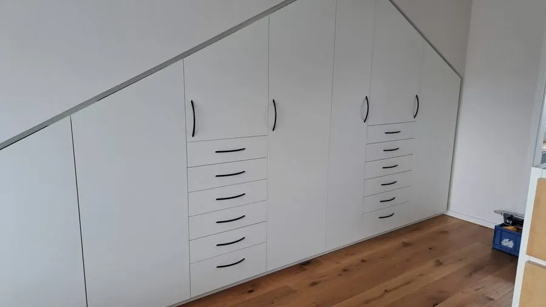
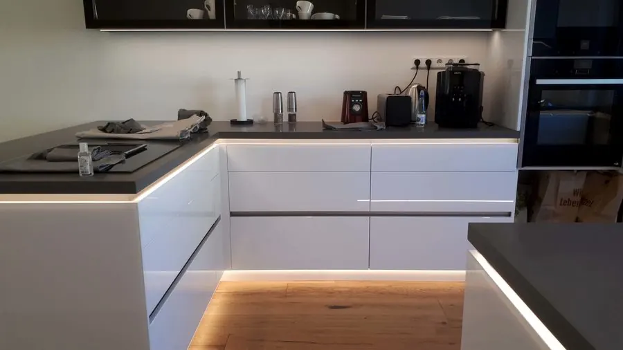
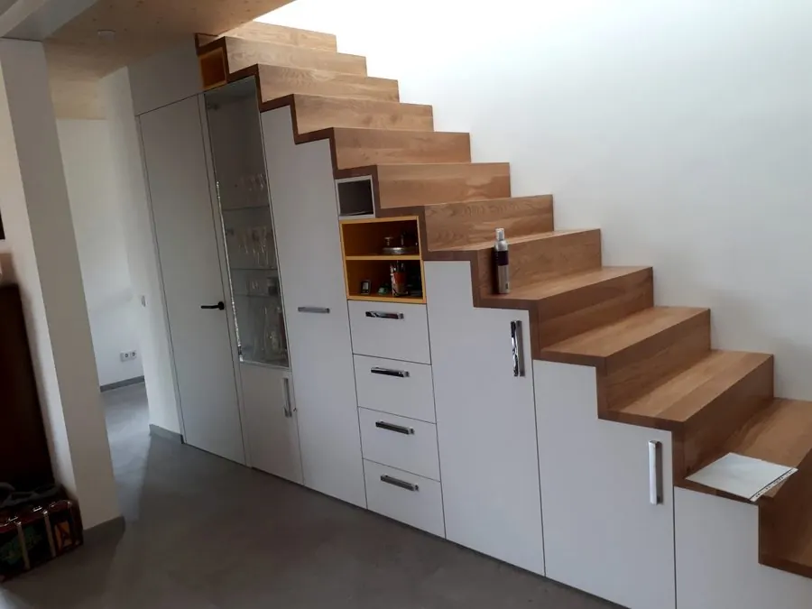
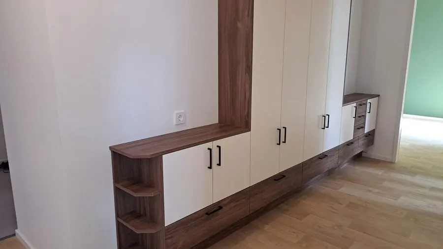
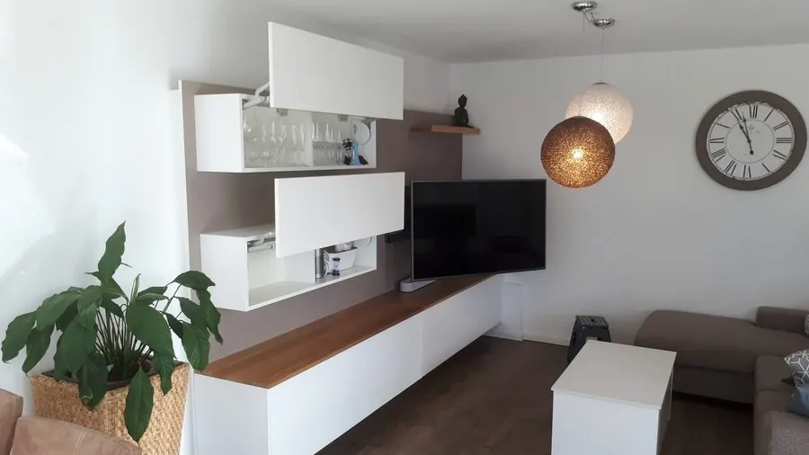
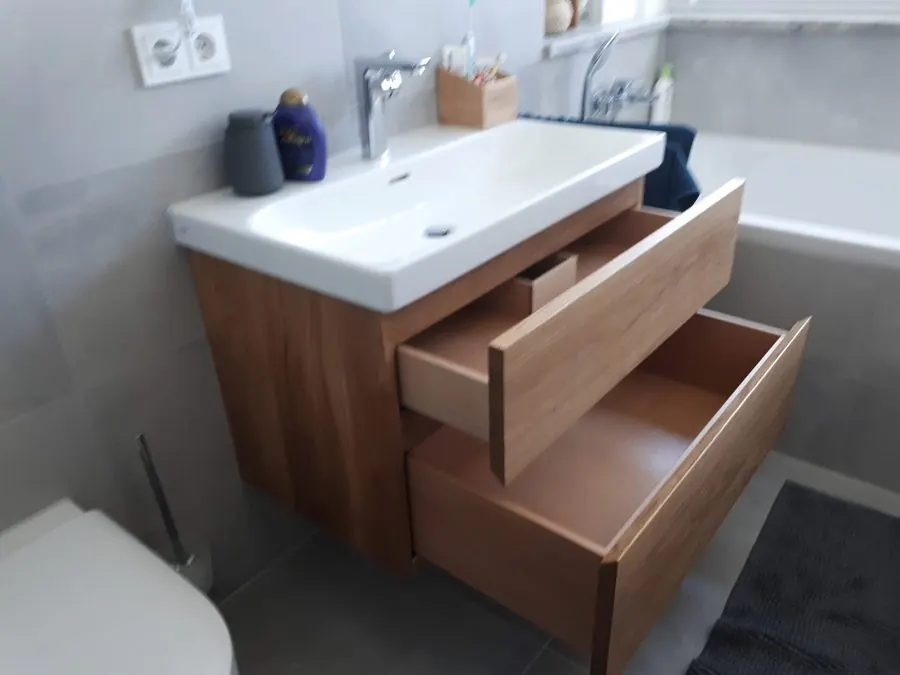
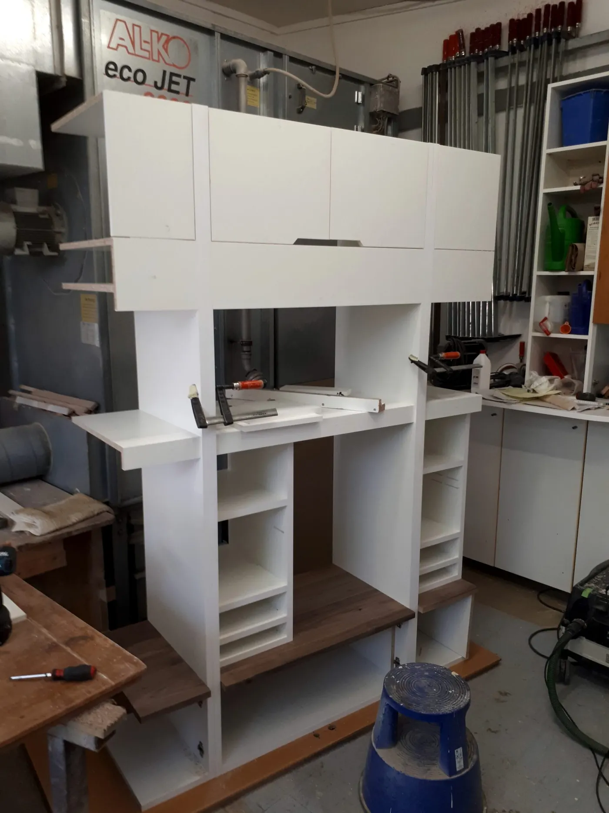

Gebaut für genau diesen Raum.Schreinermeister in Germering
Ein Meister, der plant, baut und montiert. Einbauschränke, Küchen und Möbel nach Maß — auch dort, wo ein Schrank von der Stange längst aufgibt.
Der Meister
Sie reden mit dem, der es auch baut.
Kein Verkäufer, kein Callcenter, keine Weitergabe an einen Monteur, den Sie nie gesehen haben. Wer zum Aufmaß kommt, zeichnet den Entwurf, steht an der Maschine und schraubt das Möbel an Ihre Wand.
In bald zwei Jahrzehnten macht man als Schreiner so einiges — angefangen hat es 2004 mit dem Einrichten von Diskotheken. Geblieben ist davon die Vorliebe für Licht als Bauteil.
Björn SchillingerSchreinermeister
Die Fuge
Wo andere aufhören, fange ich an.
Der Rest eines Raumes ist der Teil, für den es nichts zu kaufen gibt: die Schräge, der Kniestock, die Ecke hinter der Tür. Genau dort fängt meine Arbeit an — ein Korpus, der der Situation folgt, Fach für Fach, mit Licht in der Fuge.
- 01Aufgemessen, nicht geschätzt Jede Wand ist krumm. Der Schrank wird nach dem Raum gebaut, nicht nach einem Rastermaß.
- 02Bis unter die Decke Was oben offen bleibt, ist verschenkter Stauraum — und ein Staubfänger.
- 03Licht gehört dazu Eine Lichtfuge verändert, wie der Raum wirkt. Sie ist von Anfang an eingeplant, nicht nachgerüstet.
Leistungen
Was ich für Sie baue.

Einbauschränke
Vom raumhohen Schrank bis zur Dachschräge. Ansehen
Küchen
Raumorientierte Lösungen mit Lichtfuge und Detail. Ansehen
Stauraum & Treppe
Aus der Ecke, die alle aufgeben, wird Stauraum. Ansehen
Garderoben
Der erste Eindruck, wenn die Tür aufgeht. Ansehen
Sideboards & Wohnwände
Blickfang und Stauraum in einem Möbel. Ansehen
Badmöbel
Waschtische mit Siphonschublade, hängend oder stehend. AnsehenPhilosophie
Möbel aus dem Möbelhaus sind meist ein Kompromiss.
- Rastermaße, die im Prospekt stehen
- Endet unter der Decke, darüber bleibt Luft
- Die Ecke bleibt leer, die Schräge auch
- Passt ungefähr
- Das Maß kommt aus Ihrem Raum
- Läuft bis unter die Decke, auch schräg
- Geht über Eck und um jedes Rohr herum
- Passt genau
Schade um jeden Quadratmeter, den man nicht nutzt.
Björn Schillinger, aus seiner PhilosophieDie Gestaltung gerät darüber nicht in den Hintergrund — beides zusammen ist immer möglich und auch wünschenswert.
Die meisten, die bei mir anrufen, haben keinen fertigen Plan. Sie haben einen Raum, der sie stört, und eine Vorstellung, wie es sein sollte. Alles Weitere ergibt sich beim Aufmaß.
Material und Haltung
Womit ich arbeite.
Holz aus FSC-Wäldern
FSC-zertifizierte Hölzer und Plattenwerkstoffe aus nachhaltiger Forstwirtschaft. Von Tropenhölzern rate ich generell ab.
Licht als Bauteil
LED-Innenbeleuchtung, Lichtfugen, gesteuerte Öffnungsmechanismen. Ich baue damit, seit ich 2004 Diskotheken eingerichtet habe.
Mehr als Holz
Glas, Acryl, Mineralwerkstoffe, Stein. Holz ist bei Weitem nicht alles, was das Schreinerhandwerk zu bieten hat.
Selbst gebaut, nicht zugekauft
Viele Betriebe meiner Größe bestellen fertige Möbel und schrauben sie an. Ich baue in der eigenen Werkstatt — deshalb lässt sich auch noch ändern, was woanders längst feststeht.
Ihr Möbel, bevor es existiert
Aus dem Aufmaß entsteht eine 3D-Zeichnung. Sie bekommen einen Link und drehen Ihr Möbel am Bildschirm, bevor ich es baue.
Und was ich zukaufe
Schubladen und Fronten im Spritzwasserbereich kommen vom Spezialisten — die bekomme ich selbst nicht besser hin. Wo das so ist, sage ich es Ihnen.
So läuft es ab
Von Ihrer Nachricht bis zur Montage.
- 01
Ihre Nachricht
Eine E-Mail mit ein paar Sätzen genügt: welcher Raum, was hinein soll, ungefähr wie breit. Ein Handyfoto hilft mehr als jede Beschreibung.
- 02
Aufmaß vor Ort
Ich komme vorbei, messe den Raum auf und schaue mir die Situation an — Schräge, Rohre, Steckdosen, Fußboden.
- 03
Ihr Möbel in 3D
Sie bekommen einen Link und können Ihr Möbel von allen Seiten ansehen, bevor auch nur ein Brett zugeschnitten ist. Kein Vorstellungsvermögen nötig.
- 04
Ihre Änderungen
Wir gehen den Entwurf durch. Was Ihnen nicht passt, wird gezeichnet, bis es passt.
- 05
Angebot
Fest und nachvollziehbar, mit den Materialien, die wir besprochen haben.
- 06
Fertigung
Nach Ihrer Freigabe bestelle ich das Material und baue in der eigenen Werkstatt.
- 07
Einbau und Montage
Ich liefere und montiere selbst. Wer gebaut hat, baut auch ein.

Anfrage
Erzählen Sie mir von Ihrem Raum
Ein Foto und ein paar Maße genügen für den Anfang. Alles Weitere klären wir beim Aufmaß vor Ort.
82110 Germering
Wer in der Werkstatt steht, geht nicht immer ans Telefon — eine Nachricht genügt.